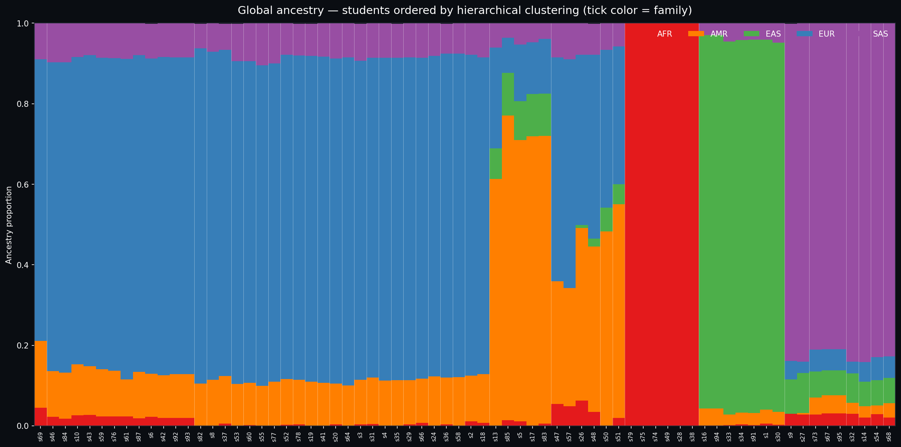
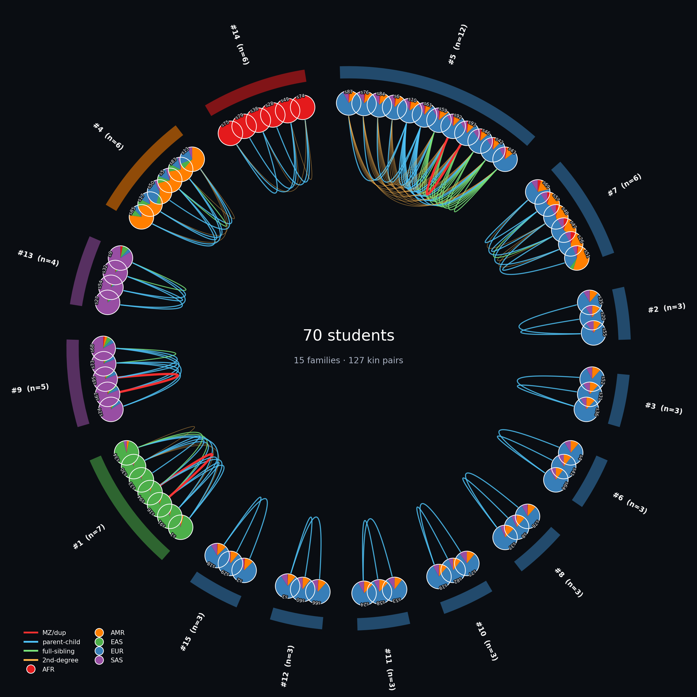
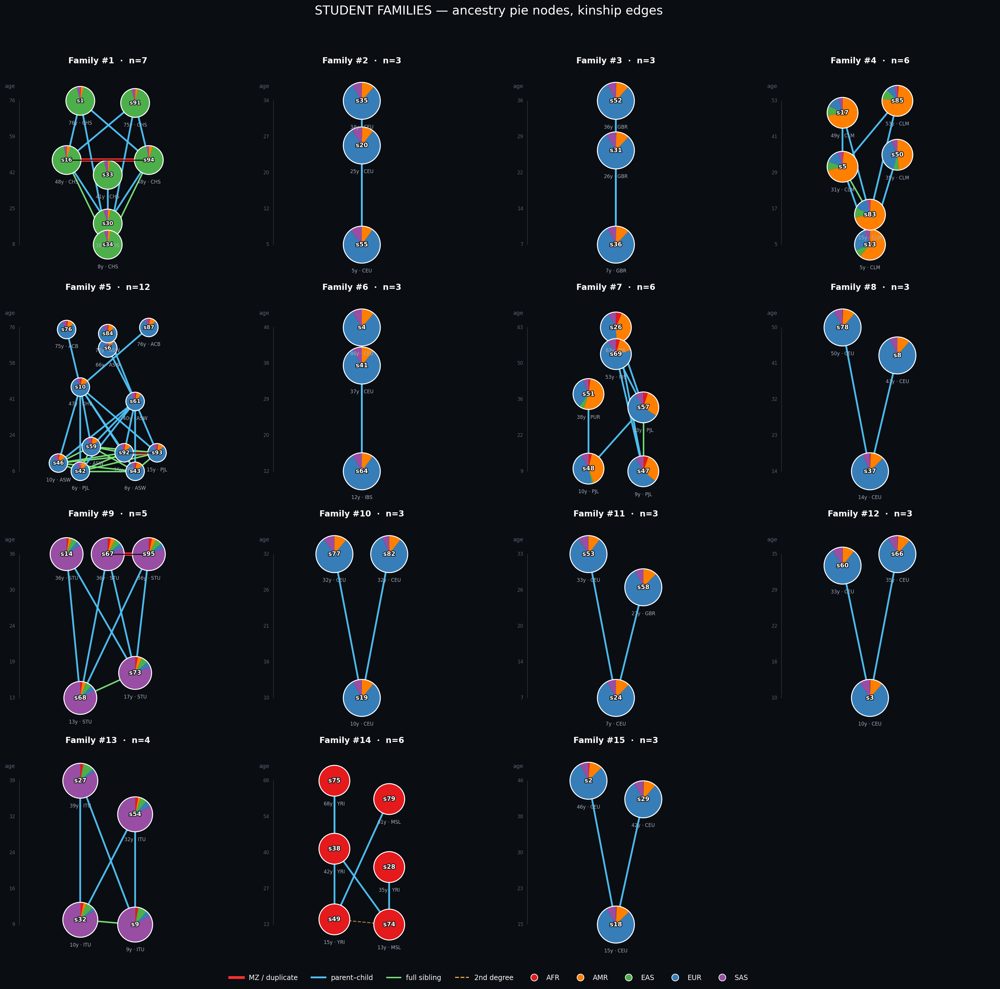

Digital Genealogist
From a 14 GB VCF of 278 samples and 5.9 million variants, this pipeline reconstructs population structure, ancestry composition, and kinship relations among 70 anonymous students. Reference panel: 208 1000 Genomes samples across 5 superpopulations.
3D PCA — interactive
Principal components 1–3 computed on 181k LD-pruned SNPs (PLINK 2). References by superpopulation, students as black diamonds. Drag to rotate; hover for details.
2D PCA — PC1/2 & PC3/4
Top 27.7% of variance lies in PC1; major continental separation visible.
UMAP of first 10 PCs
Non-linear projection emphasising local cluster structure. Each student labelled by sample id.
Sunburst — superpop → population → student
Cascade classifier prediction. Click on a wedge to drill down.
Global ancestry (NNLS)
Supervised non-negative least-squares fit of each student's genotype dosages against 1000G superpopulation allele frequencies (181k SNPs). Students sorted by dominant ancestry.
Hierarchically clustered ancestry
Students ordered by Ward clustering on ancestry vectors. Tick label colour = family.

Sankey: superpop → population → family
Flow shows how predicted populations distribute into the recovered family clusters.
Radial family chart signature view
All 70 students on a circle, grouped by family. Outer arc colour = family dominant ancestry. Each node is a 5-way ancestry pie. Bezier curves inside the circle = kinship edges (red = MZ-twin, blue = parent-child, green = full-sibling, amber dashed = 2nd degree).

Family pedigrees with ancestry pies
Y-axis = age (older at top). Each node is a 5-way ancestry pie. Lines: solid blue = parent–child, solid green = full-sibling, thick red = MZ twin, dashed amber = 2nd degree.

Kinship network
Spring-layout graph; node colour = predicted superpopulation, edge colour = relation type.
Student summary 70 rows
Per-student: age, family id, predicted superpop/population, ancestry proportions.
| sample_id | age | family_id | pred_superpop | pred_pop1 | pred_pop1_name | anc_AFR | anc_AMR | anc_EAS | anc_EUR | anc_SAS |
|---|---|---|---|---|---|---|---|---|---|---|
| s1 | 76 | 1 | EAS | CHS | Southern Han Chinese, China | 0.01 | 0.03 | 0.92 | 0.00 | 0.04 |
| s2 | 46 | 15 | EUR | CEU | Utah residents with Northern and Western European ancestry | 0.01 | 0.11 | 0.00 | 0.80 | 0.08 |
| s3 | 10 | 12 | EUR | CEU | Utah residents with Northern and Western European ancestry | 0.00 | 0.11 | 0.00 | 0.79 | 0.09 |
| s4 | 46 | 6 | EUR | CEU | Utah residents with Northern and Western European ancestry | 0.00 | 0.11 | 0.00 | 0.80 | 0.09 |
| s5 | 31 | 4 | AMR | CLM | Colombian in Medellin, Colombia | 0.01 | 0.70 | 0.10 | 0.14 | 0.05 |
| s6 | 66 | 5 | AFR | ASW | African Ancestry in Southwest US | 0.02 | 0.11 | 0.00 | 0.78 | 0.09 |
| s8 | 43 | 8 | EUR | CEU | Utah residents with Northern and Western European ancestry | 0.00 | 0.11 | 0.00 | 0.81 | 0.07 |
| s9 | 9 | 13 | SAS | ITU | Indian Telugu in the UK | 0.03 | 0.00 | 0.09 | 0.05 | 0.84 |
| s10 | 47 | 5 | EAS | KHV | Kinh in Ho Chi Minh City, Vietnam | 0.03 | 0.13 | 0.00 | 0.76 | 0.09 |
| s13 | 5 | 4 | AMR | CLM | Colombian in Medellin, Colombia | 0.00 | 0.61 | 0.08 | 0.25 | 0.06 |
| s14 | 36 | 9 | SAS | STU | Sri Lankan Tamil in the UK | 0.02 | 0.03 | 0.06 | 0.05 | 0.84 |
| s16 | 48 | 1 | EAS | CHS | Southern Han Chinese, China | 0.00 | 0.04 | 0.93 | 0.00 | 0.03 |
| s17 | 49 | 4 | AMR | CLM | Colombian in Medellin, Colombia | 0.00 | 0.72 | 0.10 | 0.13 | 0.05 |
| s18 | 15 | 15 | EUR | CEU | Utah residents with Northern and Western European ancestry | 0.01 | 0.12 | 0.00 | 0.79 | 0.09 |
| s19 | 10 | 10 | EUR | CEU | Utah residents with Northern and Western European ancestry | 0.00 | 0.11 | 0.00 | 0.81 | 0.08 |
| s20 | 25 | 2 | EUR | CEU | Utah residents with Northern and Western European ancestry | 0.00 | 0.10 | 0.00 | 0.81 | 0.09 |
| s24 | 7 | 11 | EUR | CEU | Utah residents with Northern and Western European ancestry | 0.00 | 0.12 | 0.00 | 0.80 | 0.08 |
| s26 | 63 | 7 | SAS | PJL | Punjabi in Lahore, Pakistan | 0.06 | 0.43 | 0.01 | 0.42 | 0.08 |
| s27 | 39 | 13 | SAS | ITU | Indian Telugu in the UK | 0.03 | 0.00 | 0.10 | 0.03 | 0.84 |
| s28 | 35 | 14 | AFR | YRI | Yoruba in Ibadan, Nigeria | 1.00 | 0.00 | 0.00 | 0.00 | 0.00 |
| s29 | 42 | 15 | EUR | CEU | Utah residents with Northern and Western European ancestry | 0.00 | 0.11 | 0.00 | 0.80 | 0.09 |
| s30 | 18 | 1 | EAS | CHS | Southern Han Chinese, China | 0.00 | 0.03 | 0.92 | 0.00 | 0.05 |
| s31 | 26 | 3 | EUR | GBR | British in England and Scotland | 0.01 | 0.12 | 0.00 | 0.79 | 0.09 |
| s32 | 10 | 13 | SAS | ITU | Indian Telugu in the UK | 0.03 | 0.03 | 0.07 | 0.03 | 0.84 |
| s33 | 41 | 1 | EAS | CHS | Southern Han Chinese, China | 0.00 | 0.03 | 0.93 | 0.00 | 0.05 |
| s34 | 8 | 1 | EAS | CHS | Southern Han Chinese, China | 0.00 | 0.03 | 0.93 | 0.00 | 0.04 |
| s35 | 34 | 2 | EUR | CEU | Utah residents with Northern and Western European ancestry | 0.00 | 0.11 | 0.00 | 0.80 | 0.09 |
| s36 | 7 | 3 | EUR | GBR | British in England and Scotland | 0.00 | 0.12 | 0.00 | 0.80 | 0.07 |
| s37 | 14 | 8 | EUR | CEU | Utah residents with Northern and Western European ancestry | 0.01 | 0.12 | 0.00 | 0.81 | 0.07 |
| s38 | 42 | 14 | AFR | YRI | Yoruba in Ibadan, Nigeria | 1.00 | 0.00 | 0.00 | 0.00 | 0.00 |
| s41 | 37 | 6 | EUR | CEU | Utah residents with Northern and Western European ancestry | 0.00 | 0.11 | 0.00 | 0.81 | 0.08 |
| s42 | 6 | 5 | SAS | PJL | Punjabi in Lahore, Pakistan | 0.02 | 0.11 | 0.00 | 0.79 | 0.08 |
| s43 | 6 | 5 | AFR | ASW | African Ancestry in Southwest US | 0.03 | 0.12 | 0.00 | 0.77 | 0.08 |
| s46 | 10 | 5 | AFR | ASW | African Ancestry in Southwest US | 0.02 | 0.11 | 0.00 | 0.77 | 0.10 |
| s47 | 9 | 7 | SAS | PJL | Punjabi in Lahore, Pakistan | 0.05 | 0.30 | 0.00 | 0.56 | 0.09 |
| s48 | 10 | 7 | SAS | PJL | Punjabi in Lahore, Pakistan | 0.04 | 0.41 | 0.02 | 0.46 | 0.08 |
| s49 | 15 | 14 | AFR | YRI | Yoruba in Ibadan, Nigeria | 1.00 | 0.00 | 0.00 | 0.00 | 0.00 |
| s50 | 35 | 4 | AMR | CLM | Colombian in Medellin, Colombia | 0.00 | 0.48 | 0.06 | 0.39 | 0.07 |
| s51 | 38 | 7 | AMR | PUR | Puerto Rican in Puerto Rico | 0.02 | 0.53 | 0.05 | 0.34 | 0.06 |
| s52 | 36 | 3 | EUR | GBR | British in England and Scotland | 0.00 | 0.11 | 0.00 | 0.81 | 0.08 |
| s53 | 33 | 11 | EUR | CEU | Utah residents with Northern and Western European ancestry | 0.00 | 0.10 | 0.00 | 0.80 | 0.09 |
| s54 | 32 | 13 | SAS | ITU | Indian Telugu in the UK | 0.03 | 0.02 | 0.06 | 0.06 | 0.83 |
| s55 | 5 | 2 | EUR | CEU | Utah residents with Northern and Western European ancestry | 0.00 | 0.10 | 0.00 | 0.80 | 0.10 |
| s57 | 33 | 7 | SAS | PJL | Punjabi in Lahore, Pakistan | 0.05 | 0.29 | 0.00 | 0.57 | 0.09 |
| s58 | 27 | 11 | EUR | GBR | British in England and Scotland | 0.00 | 0.12 | 0.00 | 0.80 | 0.08 |
| s59 | 18 | 5 | AFR | ASW | African Ancestry in Southwest US | 0.02 | 0.12 | 0.00 | 0.77 | 0.09 |
| s60 | 33 | 12 | EUR | CEU | Utah residents with Northern and Western European ancestry | 0.00 | 0.10 | 0.00 | 0.80 | 0.09 |
| s61 | 40 | 5 | AFR | ASW | African Ancestry in Southwest US | 0.02 | 0.09 | 0.00 | 0.80 | 0.09 |
| s64 | 12 | 6 | EUR | IBS | Iberian populations in Spain | 0.00 | 0.10 | 0.00 | 0.81 | 0.09 |
| s66 | 35 | 12 | EUR | CEU | Utah residents with Northern and Western European ancestry | 0.01 | 0.11 | 0.00 | 0.80 | 0.09 |
| s67 | 36 | 9 | SAS | STU | Sri Lankan Tamil in the UK | 0.03 | 0.04 | 0.06 | 0.05 | 0.81 |
| s68 | 13 | 9 | SAS | STU | Sri Lankan Tamil in the UK | 0.02 | 0.04 | 0.06 | 0.05 | 0.83 |
| s69 | 53 | 7 | EUR | IBS | Iberian populations in Spain | 0.04 | 0.17 | 0.00 | 0.70 | 0.09 |
| s73 | 17 | 9 | SAS | STU | Sri Lankan Tamil in the UK | 0.03 | 0.04 | 0.07 | 0.05 | 0.81 |
| s74 | 13 | 14 | AFR | MSL | Mende in Sierra Leone | 1.00 | 0.00 | 0.00 | 0.00 | 0.00 |
| s75 | 68 | 14 | AFR | YRI | Yoruba in Ibadan, Nigeria | 1.00 | 0.00 | 0.00 | 0.00 | 0.00 |
| s76 | 75 | 5 | EAS | ACB | African Caribbean in Barbados | 0.02 | 0.11 | 0.00 | 0.78 | 0.09 |
| s77 | 32 | 10 | EUR | CEU | Utah residents with Northern and Western European ancestry | 0.00 | 0.11 | 0.00 | 0.79 | 0.10 |
| s78 | 50 | 8 | EUR | CEU | Utah residents with Northern and Western European ancestry | 0.00 | 0.11 | 0.00 | 0.81 | 0.08 |
| s79 | 61 | 14 | AFR | MSL | Mende in Sierra Leone | 1.00 | 0.00 | 0.00 | 0.00 | 0.00 |
| s82 | 32 | 10 | EUR | CEU | Utah residents with Northern and Western European ancestry | 0.00 | 0.10 | 0.00 | 0.83 | 0.06 |
| s83 | 15 | 4 | AMR | CLM | Colombian in Medellin, Colombia | 0.01 | 0.71 | 0.10 | 0.14 | 0.04 |
| s84 | 73 | 5 | AFR | ASW | African Ancestry in Southwest US | 0.02 | 0.11 | 0.00 | 0.77 | 0.10 |
| s85 | 53 | 4 | AMR | CLM | Colombian in Medellin, Colombia | 0.01 | 0.76 | 0.11 | 0.09 | 0.04 |
| s87 | 76 | 5 | EAS | ACB | African Caribbean in Barbados | 0.02 | 0.12 | 0.00 | 0.79 | 0.08 |
| s91 | 75 | 1 | EAS | CHS | Southern Han Chinese, China | 0.00 | 0.03 | 0.93 | 0.00 | 0.04 |
| s92 | 15 | 5 | SAS | PJL | Punjabi in Lahore, Pakistan | 0.02 | 0.11 | 0.00 | 0.79 | 0.09 |
| s93 | 15 | 5 | SAS | PJL | Punjabi in Lahore, Pakistan | 0.02 | 0.11 | 0.00 | 0.79 | 0.09 |
| s94 | 48 | 1 | EAS | CHS | Southern Han Chinese, China | 0.00 | 0.04 | 0.93 | 0.00 | 0.03 |
| s95 | 36 | 9 | SAS | STU | Sri Lankan Tamil in the UK | 0.03 | 0.04 | 0.06 | 0.05 | 0.81 |
Downloads
Tables (TSV) for further analysis: